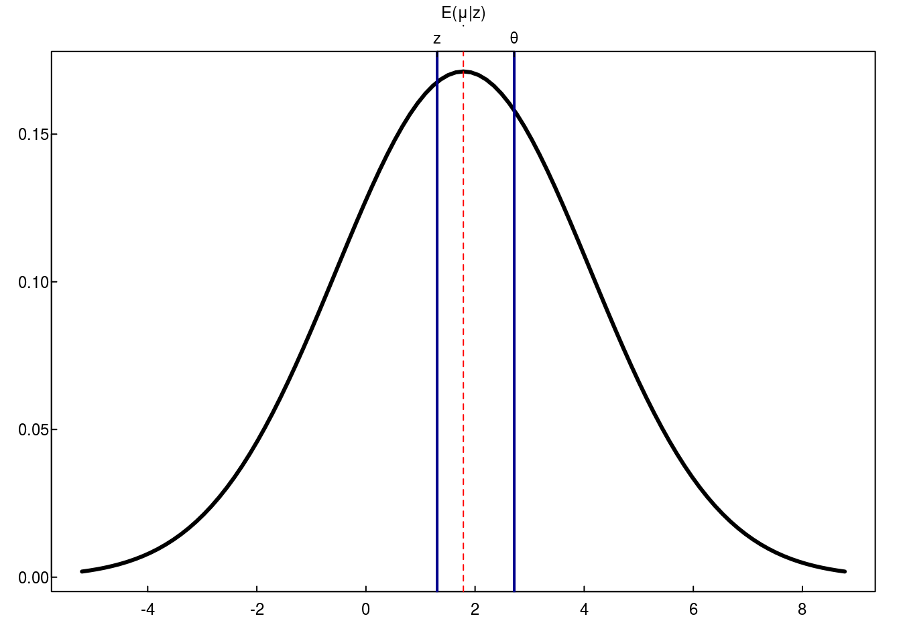

\[ \mu \sim N(\theta, A) \\ z|\mu \sim N(\mu, B) \]
\[ \begin{align*} f_{\mu|z} \propto &\ f_{\mu}f_{z|\mu} \\ \log f_{\mu|z} =&\ \text{[stuff]} + \left\{ - \frac{1}{2} (\mu - \theta)^t A^{-1}(\mu-\theta)\right\} + \left\{-\frac{1}{2}(z-\mu)^tB^{-1}(z-\mu) \right\} \\ &\ \text{Note, we only care about terms involving } \mu\\ &\ \text{[stuff]} + \left\{ - \frac{1}{2} ({\color{red}\mu} - \theta)^t A^{-1}({\color{red}\mu}-\theta)\right\} + \left\{-\frac{1}{2}(z-{\color{red}\mu})^tB^{-1}(z-{\color{red}\mu}) \right\} \\ &\ \text{[more stuff]} -\frac{1}{2}\mu^tA^{-1}\mu + \mu^tA^{-1}\theta + \mu^tB^{-1}z - \frac{1}{2}\mu^tB^{-1}\mu\\ &\text{Group quadratic and linear terms}\\ & \text{[stuff]} -\frac{1}{2}\mu^t\left[A^{-1} + B^{-1}\right]\mu + \mu^t\left[A^{-1}\theta + B^{-1}z\right]\\ &\text{Multiply by the identity}\\ & \text{[stuff]} -\frac{1}{2}\mu^t\left[A^{-1} + B^{-1}\right]\mu + \mu^t\left[A^{-1} + B^{-1}\right]\underbrace{\left[A^{-1} + B^{-1}\right]^{-1}\left[A^{-1}\theta + B^{-1}z\right]}_{q}\\ & \text{[stuff]} -\frac{1}{2}\mu^t\left[A^{-1} + B^{-1}\right]\mu + \mu^t\left[A^{-1} + B^{-1}\right]q\\ & \text{[even more stuff not invovling}\ \mu] -\frac{1}{2}(\mu - q)^t\left[A^{-1} + B^{-1}\right](\mu - q)\\ \mu|z \sim & N(\left[A^{-1} + B^{-1}\right]^{-1}\left[A^{-1}\theta + B^{-1}z\right], [A^{-1} + B^{-1}]^{-1}) \end{align*} \]
When \(A = aI\) and \(B = bI\), then \[ \mu|z \sim N\left(\frac{ab}{a+b}\left[\frac{1}{a}\theta + \frac{1}{b}z\right],\ \frac{ab}{a + b} \cdot I \right) \]
If, as in the book, \(\theta = 0\) and \(B = I\), then \[ \mu|z \sim N\left(\frac{a}{a+1}\cdot z,\ \frac{a}{a + 1} \cdot I \right) \]
set.seed(2345)
theta <- exp(1)
a <- pi
b <- (1 + sqrt(5))/2 #phi
mu <- rnorm(1, theta, sqrt(a))
z <- rnorm(1, mu, sqrt(b))
mean <- a*b/(a+b)*(theta/a + z/b)
sigma <- a*b/(a+b) %>% sqrt
plotstyle(style = upright)
par(mar = c(2,2,2,1))
curve(
dnorm(x, mean, sigma)
, from = mean - 3*sigma
, to = mean + 3*sigma
, ylab = ""
, xlab = ""
, lwd = 3
)
abline(v = c(z, theta), lwd = 2, col = "darkblue")
axis(3, at = c(z, theta), label = c("z", "θ"))
abline(v = mean, col = "red", lty = 2)
axis(3, at = mean, label = "E(μ|z)", line = 1, tcl = 0)
Let \(\tau(z)\) be a generic estimator of \(\mu\). Let \(\hat{\mu}\) denote the MLE estimate of \(\mu\).
Let \(R\left(\mu, \tau(z)\right)\) denote risk (or frequentist risk), i.e., \[ \begin{align*} R\left(\mu, \tau(z)\right) =\ &E_{z|\mu}\left[L\left(\mu, \tau(z) \right) \right] \\ & \int L\left(\mu, \tau(z) \right) p(z|\mu)\, dx. \end{align*} \]
Bayes risk, denote with \(B\), is the frequentist risk averaged over the prior.
\[ \begin{align*} B(\tau(z)) =\ &E_{\mu}\left[E_{z|\mu}\left[L\left(\tau(z), \mu\right) \right] \right] \\ &\int \int L\left(\tau(z), \mu\right) p(z|\mu)\,dx\,p(\mu)\,d\mu \end{align*} \]
In the case of the MLE, \(\hat{\mu} = z\), the frequentist risk with squared error loss is \[ \begin{align*} R\left(\mu, \hat{\mu}\right) =\ & E_{z|\mu}\left[ (z - \mu)^t(z-\mu) \right]\\ & \text{Note if } B = I \text{ then } z-\mu \sim N(0, I) \text{ which implies } (z - \mu)^t(z-\mu) \sim \chi^2_N \\ =\ & N \end{align*} \]
Bayes risk of the MLE, then, is \[ B(\hat{\mu}) = E_\mu[N] = N. \]
The posterior mean estimator is (when \(B = I\) and \(A = aI\)) \[ \dot\mu = E[\mu|z] = \frac{a}{a+1}\left[\frac{1}{a}\theta + z\right]. \]
The frequentist risk of \(\dot\mu\) is \[ \begin{align*} R(\mu, \dot\mu) =\ & E_{z|\mu}\left[ (\dot\mu - \mu)^t(\dot\mu - \mu) \right]\\ &\text{Note } \dot\mu - \mu = \frac{a}{a+1}\left[\frac{1}{a}\theta + z\right] - \mu \sim N\left(\frac{1}{a+1} \cdot (\theta -\mu), \frac{a^2}{(a+1)^2}\cdot I \right)\\ &\text{So, } \frac{(a+1)^2}{a^2}(\dot\mu - \mu)^t(\dot\mu - \mu) \sim \chi^2_{N,\lambda} \text{ where } \lambda = \frac{1}{2a^2} (\theta - \mu)^t(\theta - \mu)\\ =\ & \frac{a^2}{(a+1)^2}E_{z|\mu}\left[ \frac{(a+1)^2}{a^2}(\dot\mu - \mu)^t(\dot\mu - \mu) \right] \\ =\ & \frac{a^2}{(a+1)^2}\left(N + 2\lambda\right) \\ =\ & \frac{a^2}{(a+1)^2}\left(N + \frac{1}{a^2} (\theta - \mu)^t(\theta - \mu)\right) \\ =\ & \frac{a^2}{(a+1)^2} N + \frac{1}{(a+1)^2} (\theta - \mu)^t(\theta - \mu) \\ \end{align*} \]
The Bayesian risk of \(\dot\mu\) is \[ \begin{align*} B(\dot\mu) =\ &E_{\mu}\left[\frac{a^2}{(a+1)^2} N + \frac{1}{(a+1)^2} (\theta - \mu)^t(\theta - \mu) \right] \\ &\text{Note }\frac{1}{\sqrt{a}}(\theta - \mu) \sim N(0,I) \text{ so } \frac{1}{a} (\theta - \mu)^t(\theta - \mu) \sim \chi^2_N\\ =\ & \frac{a^2}{(a+1)^2} N + \frac{a}{(a+1)^2} E_{\mu}\left[ \frac{1}{a} (\theta - \mu)^t(\theta - \mu) \right] \\ =\ & \frac{a^2}{(a+1)^2} N + \frac{a}{(a+1)^2} N \\ =\ & \frac{a}{(a+1)} N \end{align*} \]